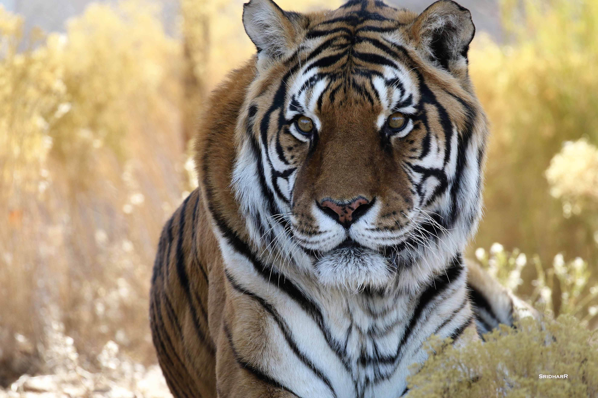
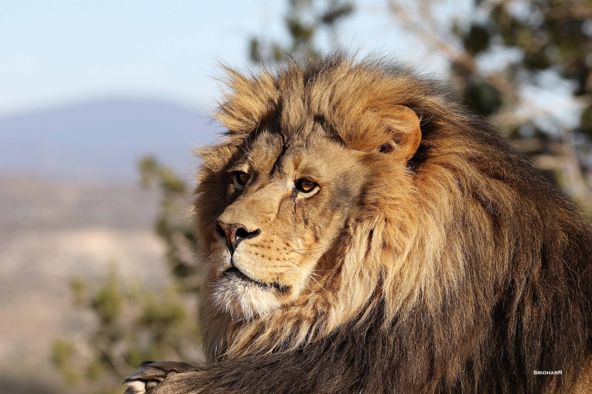
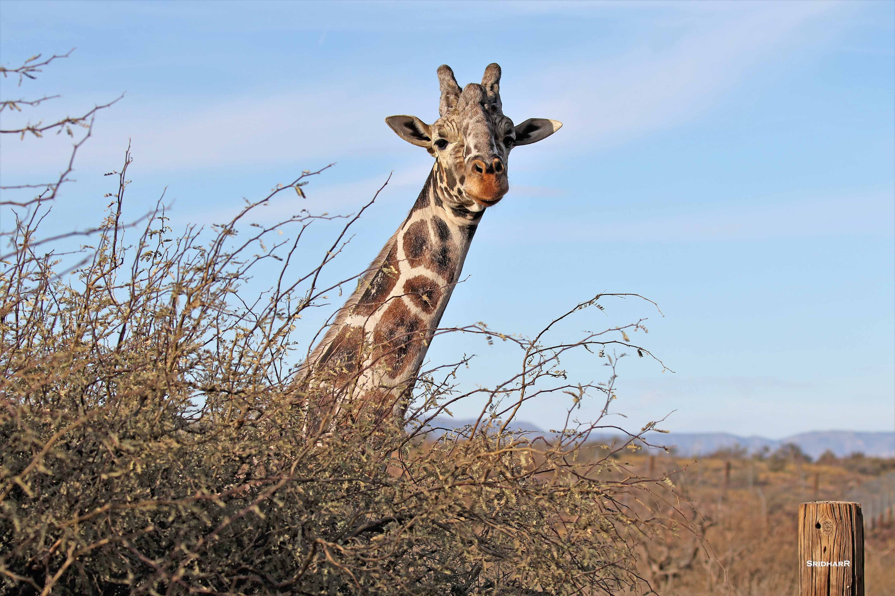
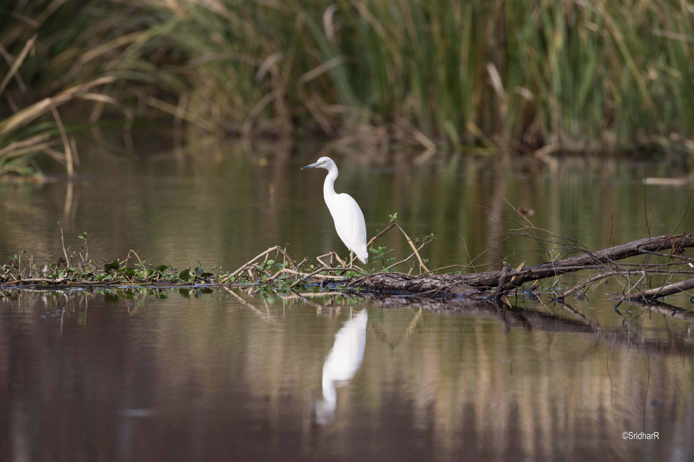
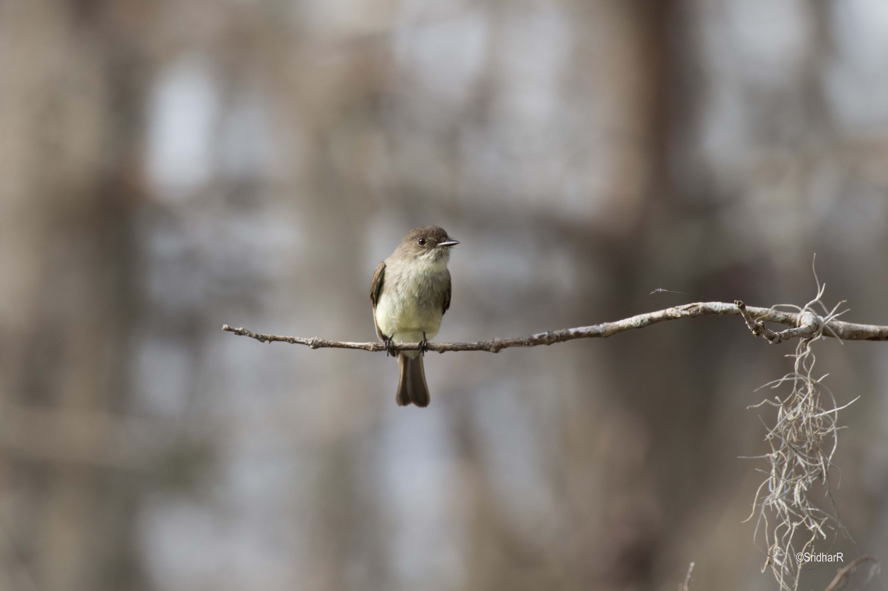
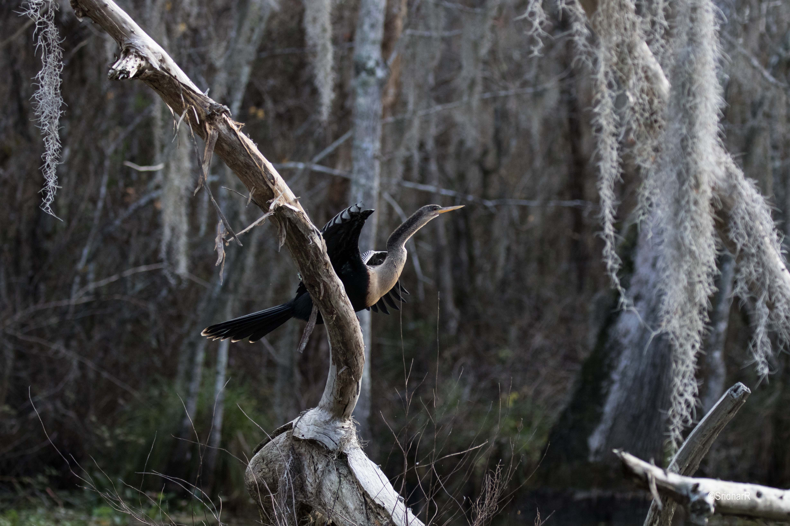
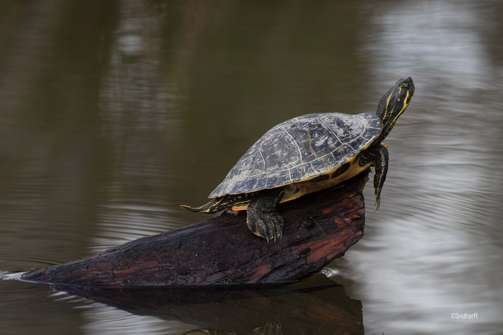
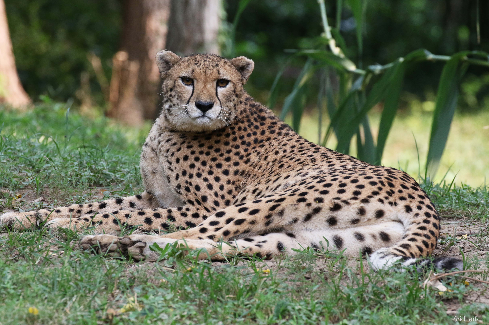
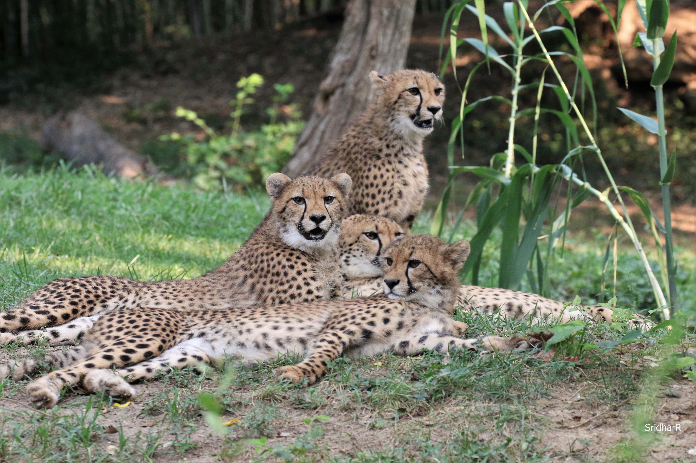

All wildlife shots were taken on a Canon 7D Mark II. F-stop settings for these range from f/5.6 to f/8 to ensure a shallow depth of field and additional focus on the animal subject. Most of the photographs were either from a preservation area or nature reserve.
Amur Tiger [Canon 7D Mark II, 1/500sec, f/6.3, ISO 500]
African Lion [Canon 7D Mark II, 1/500, 5/5.6, ISO 100]
African Giraffe [Canon &D Mark II, 1/500sec, f/5.6 ISO 100]
White Heron, New Orleans swamp tour [Canon 7D Mark II, 1/1000 sec, f/5.6, iSO 400]
Fly Catcher, New Orleans swamp tour [Canon 7D Mark II, 1/1000 sec, f/5.6, ISO 500]
Anhinga, New Orleans swamp tour [Canon 7D Mark II, 1/1000 sec, f/5, ISO 800]
Painted Turtle, New Orleans swamp tour [Canon 7D Mark II, 1/1000 sec, f/5, ISO 800]

Alligator, New Orleans swamp tour [Canon 7D Mark II, 1/160 sec, f/8, ISO 800]
Adult Cheetah, St. Louis Zoo [Canon 7D Mark II, 1/320 sec, f/8, ISO 1250]
Cheetah family, St. Louis Zoo [Canon 7D Mark II, 1/320 sec, f/8, ISO 1650]